생성형 AI로 자료를 조사하고, 분석하고, 보고서·기획서까지
오늘은 젠스파크(Genspark) 하나로 자료를 모으고, 데이터를 분석하고, 보고서·기획서까지 완성해 봐요. 오전에는 웹 자료 수집과 문서 템플릿·스타일 변환을, 오후에는 가상의 쇼핑몰 데이터로 데이터 기반 보고서를 만든 뒤 내 업무 주제로 미니 프로젝트를 진행해요. 모든 단계는 강사가 먼저 화면으로 보여 드리고, 같은 순서로 천천히 따라 해요.
교육 개요
| 시간 | 10:00–17:00 (점심 12:30–13:30, 실습 6시간) |
|---|---|
| 진행 방식 | 단계마다 강사가 먼저 시연하고, 같은 화면으로 천천히 따라 해요. 막히면 바로 손을 들어 주세요. |
| 도구 | Genspark Plus(유료): 홈 입력창, 딥 리서치, 팩트 체크, AI 문서, AI 시트, AI 슬라이드 |
| 교육 목표 | 생성형 AI를 활용해 보고서/기획서를 효과적으로 작성하는 방법을 알아보고, 자료를 수집·분석해 일관성 있는 보고서/기획서를 작성할 수 있다. |
| 주요 내용 | ① 서론·본론·결론(보고서), 목표·전략·제안(기획서)의 기본 구성 이해 ② 보고서·기획서의 각 부분을 AI로 작성하는 실습 ③ 섹션 간 논리적 연결과 일관성을 유지하는 방법 |
| 수업이 끝나면 | ① 기존 문서 작성과 AI 활용 방식의 차이를 설명한다 ② 딥 리서치로 자료를 모으고 출처를 확인한다 ③ 템플릿과 스타일 변환으로 보고서·기획서 초안을 만든다 ④ 데이터를 요약·시각화해 인사이트 중심 보고서를 구성한다 ⑤ 내 업무 주제로 보고서/기획서를 완성해 발표한다 |
수업 전 준비
오늘 수업은 브라우저에서 진행해요. 아래 두 가지만 미리 준비해 오시면 됩니다.
- Genspark 계정: genspark.ai에 로그인해 두세요. 오늘은 유료(Plus) 계정 기준으로 진행해요. 입력창 위 안내 줄의 [사용량 보기]를 누르면 남은 크레딧을 확인할 수 있어요.
- 실습 파일: 아래 2개 파일을 내려받아 바탕화면에 저장해 두세요. 세션 4에서 사용해요.
실습 파일
가상의 온라인 생활용품 쇼핑몰 "셀렉트마켓"의 2026년 3분기(7~9월) 데이터예요. 실제 업무 파일처럼 정리할 거리가 곳곳에 들어 있어요.
CSV는 쉼표(,)로 칸을 나눠 적은 텍스트 파일이에요. 한 줄이 표의 한 행이고, 쉼표와 쉼표 사이가 칸 하나예요.
| 파일 | 한 행이 뜻하는 것 | 첫 데이터 행의 값 |
|---|---|---|
orders_raw.csv | 주문 한 건 | A1001 · 2026.7.1 · 경기 · 앱 · 이서연 · P001 · 2 · 15,000원 · 결제완료 |
products.csv | 상품 하나 | P001 · 텀블러 500ml · 리빙 · 15000 |
타임테이블
오전에는 젠스파크로 자료를 모으고 보고서·기획서의 틀을 만들어요. 오후에는 데이터로 보고서의 근거를 만들고, 내 업무 주제로 직접 문서를 완성해 발표해요.
| 시간 | 세션 | 내용 | Genspark 기능 |
|---|---|---|---|
| 10:00–10:30 | 1. 생성형 AI와 문서 자동화 개요 | 젠스파크 화면 맞추기 · 기존 문서 작성 vs AI 활용 비교 · 내 업무 스케치 · 업무 문서용 AI 도구 | 홈 입력창 |
| 10:30–11:30 | 2. Genspark 실전 활용 ① | 웹 기반 자료 자동 수집 · 출처 확인 · 여러 자료로 리포트 만들기 | 딥 리서치, 팩트 체크, AI 문서 |
| 11:30–12:30 | 3. Genspark 실전 활용 ② | 보고서·기획서 기본 구조 · 템플릿 자동 생성 · 목적별 문서 스타일 변환 · 섹션 간 일관성 점검 | AI 문서, AI 슬라이드 |
| 12:30–13:30 | 점심 | (과정 진행에 따라 시간 변경 가능) | |
| 13:30–14:30 | 4. 데이터 기반 보고서 제작 | 데이터 요약 → 시각화 · 인사이트 중심 보고서 구성 · 차트/표 문서 삽입 | AI 시트, AI 문서 |
| 14:30–16:00 | 5. 미니 프로젝트 | 자유 주제 선정 → 자료 조사 → 분석 → 보고서/기획서 제작 | 전체 |
| 16:00–17:00 | 6. 발표 및 피드백 | 완성한 보고서/기획서 발표 · 사실·논리·실행 가능성 피드백 | AI 슬라이드(선택) |
생성형 AI와 문서 자동화 개요
먼저 모두 같은 젠스파크 화면과 설정으로 맞춰요. 그다음 기존 방식과 AI 활용 방식을 비교하고, 내 업무를 스케치해서 AI에게 맡길 단계를 찾아요.
1-1. 시작 전: 젠스파크 화면 살펴보고 맞추기
실습을 시작하기 전에 젠스파크 첫 화면에서 자주 쓰는 곳을 확인하고, 모두 같은 설정으로 맞춰요. 설정이 다르면 같은 프롬프트를 보내도 답의 모양과 차감되는 크레딧이 달라져요.
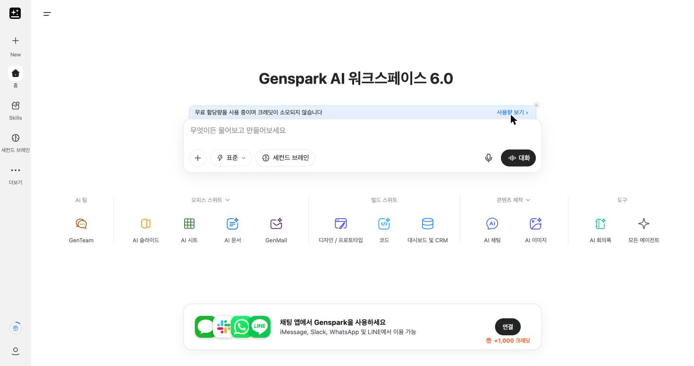
| 위치 | 이름 | 하는 일 |
|---|---|---|
| 왼쪽 맨 위 | + New | 새 작업을 열어요. 실습 주제가 바뀔 때 눌러요. |
| 가운데 | 입력창 | 프롬프트를 붙여 넣고 보내요. "무엇이든 물어보고 만들어보세요"라고 적혀 있어요. |
| 입력창 왼쪽 아래 | + | [로컬 파일 찾기]로 내 컴퓨터의 파일을 올려요. [AI 드라이브에서 선택]으로 젠스파크에 저장한 파일도 고를 수 있어요. |
| 입력창 아래 | 표준 / Ultra | 답을 만드는 모드예요. 오늘은 표준으로 맞춰요. |
| 입력창 위 | 사용량 보기 | 남은 무료 할당량과 크레딧을 확인해요. |
| 입력창 아래 줄 | 에이전트 바로가기 | AI 슬라이드, AI 시트, AI 문서 같은 전문 도구를 바로 열어요. [모든 에이전트]에서 딥 리서치, 팩트 체크도 찾을 수 있어요. |
표준 모드로 맞추기
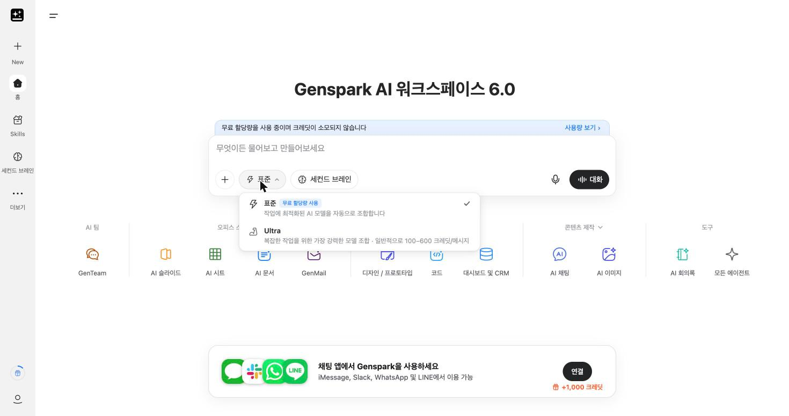
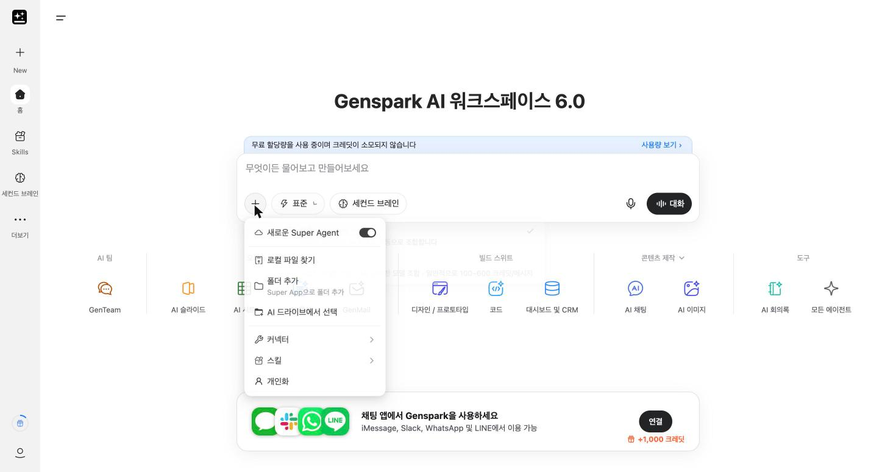
표준은 작업에 맞는 AI 모델을 자동으로 골라 조합해요. 화면에 "무료 할당량 사용"이라고 표시되면 크레딧이 차감되지 않아요.
Ultra는 복잡한 작업을 위해 가장 강력한 모델을 조합하는 모드예요. 메시지 한 번에 보통 100–600 크레딧이 들어요. 오늘 실습은 모두 표준으로 충분해요.
사용량 확인하기: 입력창 위 [사용량 보기]를 누르면 이번 주 무료 할당량과 남은 크레딧이 보여요. "먼저 확인: 크레딧 사용 전 확인" 스위치를 켜 두면 크레딧이 드는 작업 전에 한 번 더 물어봐요.
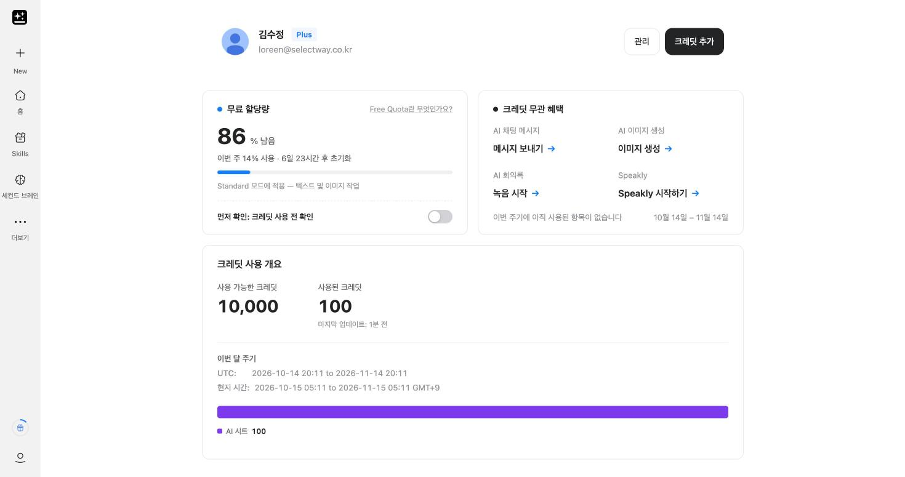
1-2. 기존 문서 작성 vs AI 활용 비교
같은 보고서를 만들 때 일하는 순서가 어떻게 달라지는지 먼저 비교해 봐요.
| 단계 | 기존 방식 | AI 활용 방식 | 사람이 꼭 할 일 |
|---|---|---|---|
| 자료 조사 | 검색창에 여러 번 검색하고, 쓸 만한 자료를 직접 모아요 | 딥 리서치가 여러 출처를 찾아 읽고 요약해요 | 출처를 열어 보고, 숫자와 날짜가 맞는지 확인 |
| 구성 잡기 | 예전 보고서를 열어 목차를 베껴요 | AI 문서가 목적에 맞는 템플릿을 만들어요 | 우리 회사 양식과 독자에 맞는지 판단 |
| 초안 작성 | 빈 화면에서 한 문장씩 써요 | 자료를 주면 서론·본론·결론 초안을 써 줘요 | 주장과 결론을 내가 정하기 |
| 데이터 정리 | 함수와 피벗을 직접 만들어요 | AI 시트에 말로 요청하면 표와 차트를 만들어요 | 기준값과 대조해 계산이 맞는지 확인 |
| 다른 형식으로 바꾸기 | 보고서를 제안서·발표 자료로 다시 써요 | 같은 내용을 목적별 스타일로 변환해요 | 변환하면서 숫자가 바뀌지 않았는지 확인 |
| 검토 | 선배나 팀장이 읽고 빨간 펜 | 팩트 체크와 일관성 점검 요청 | 최종 승인과 책임 |
AI가 초안을 빠르게 만들어 줄수록, 관리자의 일은 두 가지로 모여요. 하나는 무엇을, 누구에게, 왜 쓰는지 정하는 일이고, 다른 하나는 나온 결과가 맞는지 확인하고 승인하는 일이에요. 팀원이 AI로 만든 보고서를 받을 때는 "출처는 어디인가요?", "이 숫자는 어떻게 계산했나요?", "AI가 쓴 부분 중 직접 고친 곳은 어디인가요?" 세 가지를 물어보세요. 회사 내부 자료나 개인 정보는 AI에 올리기 전에 회사 보안 기준을 먼저 확인해요.
1-3. 내 업무를 스케치하고 5단계로 쪼개기
내 업무를 쪼개 보기 전에 "워크플로우"라는 단어부터 풀어 볼게요.
워크플로우(workflow)는 일(work)이 흐르는(flow) 순서를 뜻해요. 일이 시작해서 끝나기까지 어떤 단계를 거치는지를 순서대로 나열한 거예요. 점심을 주문하는 일도 "메뉴 고르기 → 주문하기 → 결제하기 → 받기"라는 워크플로우가 있어요. 데이터 업무에도 같은 흐름이 있어요. "주문 파일 내려받기 → 정리하기 → 합계 구하기 → 비교하기 → 보고하기" 같은 순서예요.
"AI로 만드는 워크플로우"는 이 순서 중에서 어느 단계를 AI에게 맡기고, 어느 단계를 내가 직접 확인할지 정해 둔 흐름이에요. 이렇게 정해 두면 AI에게 무엇을 어느 단계에서 부탁할지 분명해져요. 보고서·기획서를 만드는 업무도 대부분 아래 다섯 단계를 거쳐요.
"프로세스"라는 말도 자주 나와요. 프로세스는 일을 진행하는 방식과 절차를 뜻하고, 오늘은 워크플로우와 거의 같은 뜻으로 써요. 이제 내 업무로 이 워크플로우를 직접 만들어 볼게요.
세 단계로 진행해요. 먼저 메모장에 내 업무를 자유롭게 적고, 그중에서 자료와 숫자를 다루는 일을 찾아요. 그다음 그 일을 내 손으로 직접 풀어서 써 보고, 마지막에 젠스파크와 함께 표로 정리해요.
STEP 1. 메모장에 내 업무 스케치하기
월요일 09:30 주문 파일 내려받기 ★
월요일 10:00 팀 회의
월요일 11:00 지난주 지역별 매출 합계 만들기 ★
월요일 14:00 팀장님께 주간 매출 보고 ★
STEP 2. 3가지 업무를 풀어서 직접 써 보기
이 수업에서는 아래 세 가지 업무를 예로 들게요. 내 업무에 별표 친 일이 있다면 그 일로 바꿔도 좋아요.
- ① 주문 파일 내려받기
- ② 지역별 매출 합계 만들기
- ③ 주간 매출 보고하기
이 세 가지를 내가 실제로 어떻게 진행하는지, 어디를 누르고 무엇을 입력하는지를 줄줄이 풀어서 직접 써 보세요. 여기서는 AI를 쓰지 않고 내 손으로 써야 해요. 내가 어떻게 일하는지는 나만 알고 있기 때문이에요.
1. 쇼핑몰 관리자 페이지에 로그인한다.
2. 왼쪽 메뉴에서 [주문 관리]를 누른다.
3. 기간을 지난주 월요일~일요일로 바꾸고 [검색]을 누른다.
4. 오른쪽 위의 [파일 다운로드]를 눌러 바탕화면에 저장한다.
5. 저장한 파일을 열어 맨 위 열 이름과 행 개수를 확인한다.
글을 쓰다가 참고가 될 만한 자료가 있으면 메모장에 같이 모아 두세요.
- 내가 로그인하는 관리자 페이지 주소(링크)
- 주문 파일을 내려받는 화면을 캡처한 이미지
- 지금 쓰고 있는 보고서 양식 파일
이 자료들은 다음 단계에서 AI에게 내 업무를 정확히 알려 주는 재료가 돼요.
STEP 3. AI로 표 만들기
이제 AI를 쓸 차례예요. STEP 2에서 쓴 글을 젠스파크에 보여 주고, 표로 정리해 달라고 요청해요. 아래 프롬프트를 복사해서 젠스파크 홈 입력창에 붙여 넣고, [ ] 부분을 내 내용으로 바꿔 보내세요.
나는 [직무]이고, 아래는 내가 하는 업무 3가지를 직접 풀어서 쓴 글이야. [STEP 2에서 쓴 글 붙여넣기] 이 3가지 업무를 하나의 표로 정리해 줘. - 행: 업무 3가지 (주문 파일 내려받기 / 지역별 매출 합계 만들기 / 주간 매출 보고하기) - 열: 해당 단계(파악·정리·요약·분석·보고 중 하나) / 내가 하는 일(순서대로) / 사용하는 화면이나 도구 / 결과물 내가 쓴 글에 없는 내용은 새로 만들지 말고, 글에 없는 칸은 '내용 없음'으로 적어 줘.
그러면 젠스파크가 이런 표를 만들어 줘요 (예시)
| 업무 | 해당 단계 | 내가 하는 일 (순서대로) | 화면·도구 | 결과물 |
|---|---|---|---|---|
| 주문 파일 내려받기 | ① 파악 | 1) 관리자 페이지에 로그인 2) [주문 관리] 클릭 3) 지난주 기간으로 [검색] 4) [파일 다운로드]로 저장 5) 열 이름과 행 개수 확인 | 쇼핑몰 관리자 페이지, 스프레드시트 | 지난주 주문 파일 |
| 지역별 매출 합계 만들기 | ③ 요약 | 1) 지역 열과 금액 열 확인 2) 지역별로 금액을 더함 3) 합계를 표로 정리 | 스프레드시트 | 지역별 매출 합계표 |
| 주간 매출 보고하기 | ⑤ 보고 | 1) 합계표에서 결론 한 줄 정하기 2) 근거 숫자 3개 고르기 3) 한 장으로 정리해 팀장님께 보고 | 스프레드시트, 보고서 양식 | 주간 매출 보고서 한 장 |
위 표는 예시이고, 내가 쓴 글에 따라 내용이 달라져요. 표가 나오면 내가 쓴 글과 하나씩 비교하며 확인하세요. 내가 쓰지 않은 내용이 들어갔거나 빠진 내용이 있으면 젠스파크에 다시 고쳐 달라고 해요. 빠진 단계가 없는지는 AI가 알 수 없어요. 내 업무를 아는 사람은 나뿐이라서, 이 확인은 내가 해야 해요.
1-4. 업무 문서 제작에 쓰는 AI 도구
오늘은 젠스파크 안의 여러 에이전트를 단계에 맞게 골라 써요. 다른 도구도 함께 알아 두면 상황에 맞게 고를 수 있어요.
| 도구 | 이럴 때 써요 | 오늘 쓰는 세션 |
|---|---|---|
| Genspark 딥 리서치 | 여러 출처를 찾아 읽고 한 번에 정리할 때 | 세션 2, 5 |
| Genspark 팩트 체크 | 숫자나 주장이 사실인지 출처로 확인할 때 | 세션 2, 5 |
| Genspark AI 문서 | 보고서·기획서 초안, 템플릿, 문서 스타일 변환. Word(.docx), 웹 문서, Markdown으로 내보낼 수 있어요 | 세션 2, 3, 4, 5 |
| Genspark AI 시트 | 표 데이터를 정리·분석하고 차트를 만들 때 | 세션 4 |
| Genspark AI 슬라이드 | 보고서 내용을 발표 자료로 바꿀 때 | 세션 3, 6 (선택) |
| ChatGPT | 대화하며 글을 다듬거나 아이디어를 넓힐 때 | 소개만 |
| NotebookLM | 내가 넣은 자료만 바탕으로 요약하거나 질문할 때 | 소개만 |
| Notion | 팀이 함께 문서와 자료를 정리하고 공유할 때 | 소개만 |
Genspark 실전 활용 ①: 자료 수집과 리포트
보고서의 근거가 되는 자료를 딥 리서치로 모으고, 숫자는 팩트 체크로 확인한 뒤, 여러 자료를 합쳐 리포트 초안까지 만들어요.
2-1. 딥 리서치로 웹 자료 자동 수집
보고서의 "배경"에 넣을 자료를 모아요. 오늘 예시는 셀렉트마켓 3분기 매출 보고서에 넣을 시장 배경이에요. 내 업무 주제가 있다면 [ ] 안을 바꿔서 해도 좋아요.
요청: 국내 온라인 생활용품 시장의 최근 1년 동향을 조사해 줘. 내용: 우리 회사는 생활용품을 파는 온라인 쇼핑몰 '셀렉트마켓'이고, 3분기 매출 보고서의 '시장 배경'에 넣을 자료가 필요해. 판매 채널(앱·웹·오프라인) 변화와 소비자 구매 방식 변화 위주로 찾아 줘. 형식: 핵심 내용 5줄 요약. 줄마다 끝에 출처(기관명·발행일·링크)를 달고, 출처를 찾지 못한 내용은 '출처 없음'으로 표시해 줘.
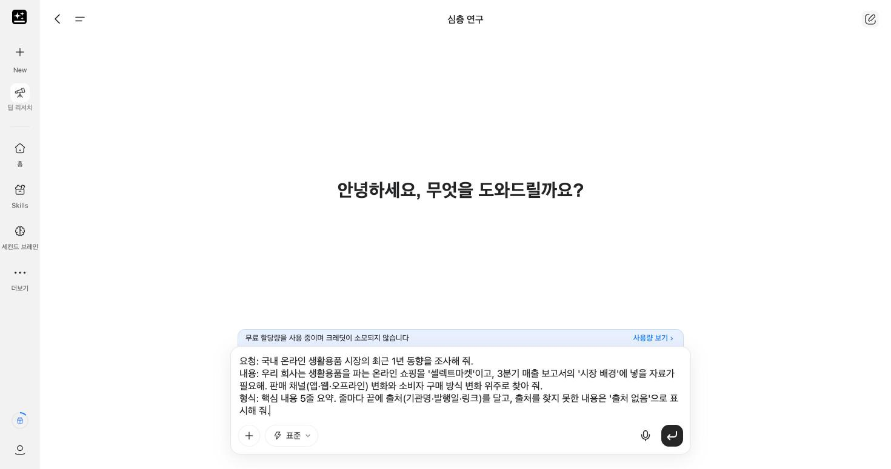
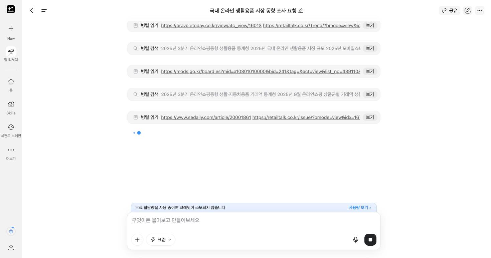
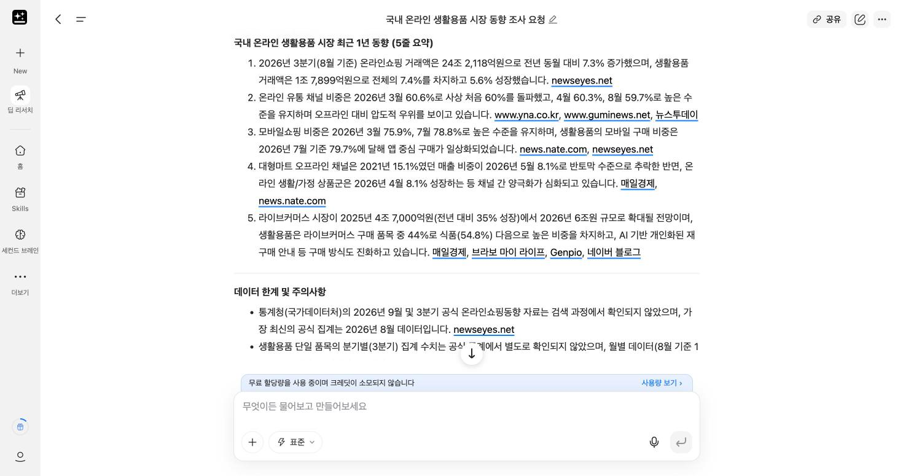
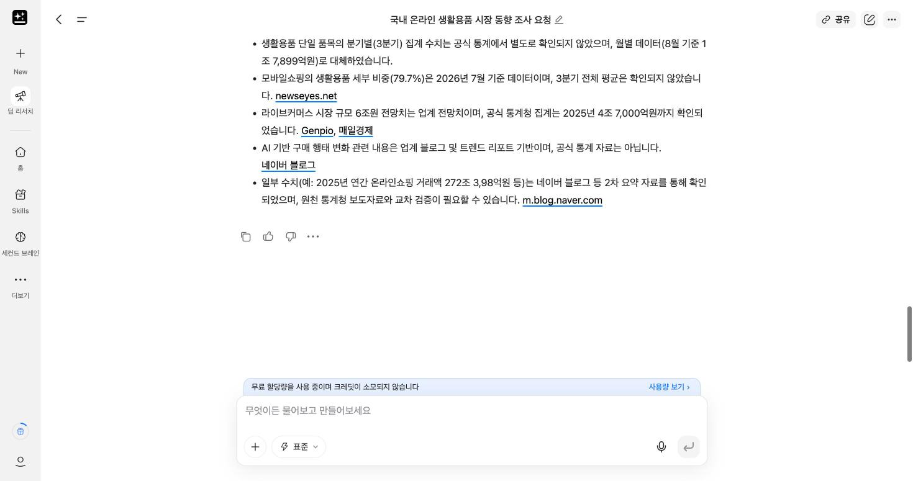
① 1번 줄은 "3분기(8월 기준)"라고 썼지만 실제 숫자는 8월 한 달 값이에요. 기간 표현이 숫자와 맞는지 봐요.
② 출처에 언론 기사와 함께 블로그도 섞여 있어요. 보고서에는 기관 자료나 언론 기사처럼 원문이 분명한 출처만 남겨요.
③ 주의사항에 "272조 3,98억원"처럼 자릿수가 이상한 숫자가 있어요. 숫자는 출처 원문과 한 번 더 대조해요.
결과 확인
- 출처 링크를 2개 이상 직접 열어 봤나요?
- 출처의 발행일이 1년 이내인가요?
- 요약의 숫자가 원문의 숫자와 같나요?
- '출처 없음'으로 표시된 줄은 보고서에서 빼거나 따로 확인할 거리로 남겼나요?
2-2. 팩트 체크로 숫자 확인하기
딥 리서치 요약에서 숫자가 들어간 문장 하나를 골라 사실인지 확인해요. 보고서에 들어가는 숫자는 한 번 더 확인하는 것이 원칙이에요.
요청: 아래 문장이 사실인지 확인해 줘. 내용: [딥 리서치 요약에서 고른, 숫자가 들어간 문장] 형식: 판정(사실 / 일부 사실 / 확인 불가) 한 줄, 근거가 된 출처 2개 이상(기관명·발행일·링크)
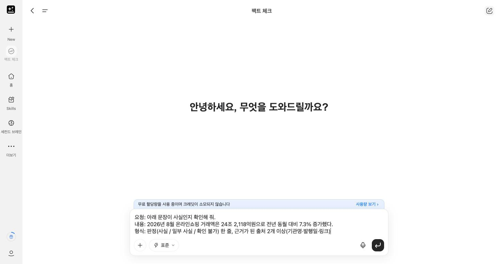
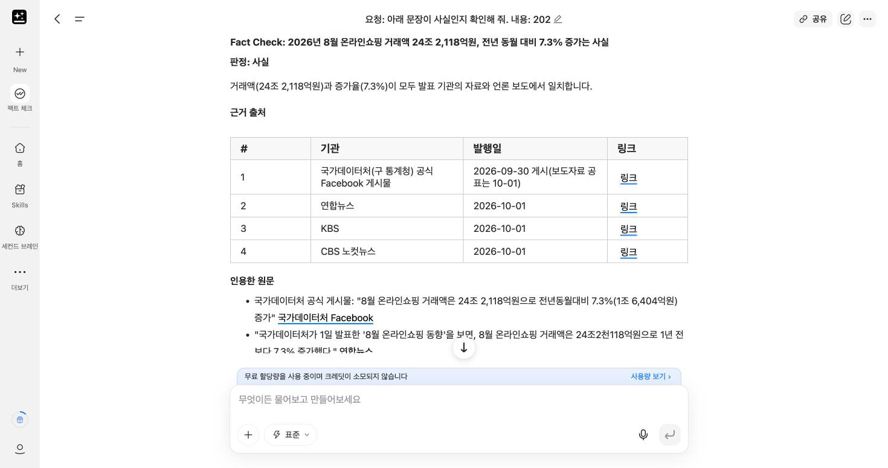
결과 아래쪽에는 "기관 원문 보도자료 PDF는 직접 열어 보지 못했다"는 안내도 함께 나왔어요. 판정이 "사실"이어도 보고서에 넣을 숫자는 기관 원문 링크를 직접 열어 확인하는 것이 안전해요.
판정이 "일부 사실"이나 "확인 불가"라면, 보고서에는 숫자를 빼고 쓰거나 확인된 출처의 숫자로 바꿔요.
2-3. 여러 자료로 리포트 만들기
웹에서 모은 자료와 우리 회사 메모를 합쳐 1페이지 리포트 초안을 만들어요. 자료가 여러 개일 때는 "자료에 없는 숫자는 쓰지 말라"고 꼭 알려 줘요.
요청: 아래 두 자료를 합쳐서 1페이지 리포트 초안을 만들어 줘. 내용: ① 시장 배경 자료: [2-1 딥 리서치 요약 붙여넣기] ② [셀렉트마켓 3분기 메모] - 3분기(7~9월) 결제완료 매출 4,357,000원, 주문 97건 - 월별 매출: 7월 889,000원 / 8월 2,014,000원 / 9월 1,454,000원 - 지역 1위 서울 1,552,000원 - 앱 채널 매출 2,183,000원, 전체의 약 50% - 팀장 요청: 4분기 판매 채널 전략 방향을 제안해 줘 형식: 제목 / 요약 3줄 / 시장 배경 / 우리 실적 / 시사점 순서. 자료에 없는 숫자는 쓰지 말고, 문단마다 끝에 근거 자료 번호(①, ②)를 붙여 줘.
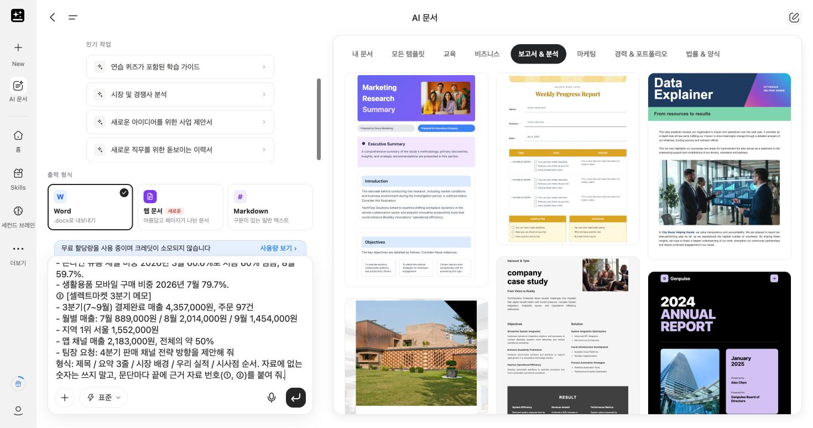
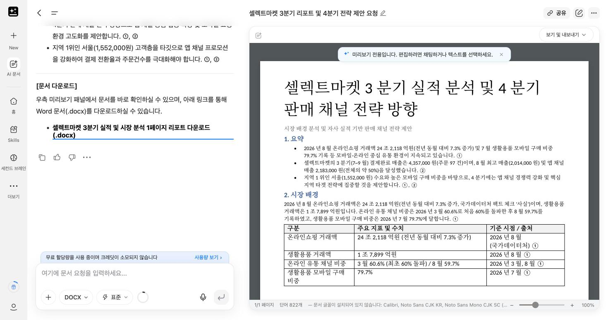
결과 확인
- 문단마다 근거 번호가 붙어 있나요?
- ②의 숫자(4,357,000원, 8월 2,014,000원 등)가 그대로 들어갔나요?
- 자료에 없던 숫자나 회사 이름이 새로 생기지 않았나요?
- 근거 번호가 그 문장을 실제로 받치나요? 실제 실행에서는 "서울 고객층을 타깃으로…" 문장에 ①(시장 자료)이 붙었는데, ①에는 서울 이야기가 없었어요.
여러 형식으로 내보내기: Word 다음에 PDF, 엑셀
· AI 문서: Word, PDF, Markdown(Markdown 형식 문서만)으로 내보낼 수 있어요. 오른쪽 위 [보기 및 내보내기]에서 골라요. "별도 브라우저에서 열기"는 웹 페이지로 보여 주는 기능이고 파일로 받는 것은 아니에요.
· AI 시트: 엑셀(.xlsx)로 내보낼 수 있어요. 편집기 왼쪽 위 [Export] → [Export as XLSX]를 눌러요.
· 한글(.hwp, .hwpx): 공식 가이드에 지원 형식으로 나와 있지 않아요. 한글 문서가 필요하면 Word로 받은 뒤 한글 프로그램에서 열어 저장해요.
출처: Genspark Help Center AI Docs(2026-09-24 갱신), AI Sheets · 2026-10-15 확인
엑셀로 보내야 한다면, 대화창에서 요청해도 파일을 만들어 줘요. 실제로 해 본 결과 시트 2개(요약, 근거 지표)짜리 .xlsx가 약 1분 만에 나왔고 숫자도 입력값과 같았어요. 다만 이 방법은 AI가 대화 중에 파일을 만들어 주는 것이라, 표 데이터를 계속 다룰 파일이라면 AI 시트의 [Export as XLSX]로 받는 것이 공식 방법이에요.
요청: 같은 리포트를 엑셀(.xlsx) 파일로 만들어 줘. 내용: 시트 1 '요약'에는 핵심 결론과 요청 사항, 시트 2 '근거 지표'에는 숫자를 표로(항목 / 값 / 단위 / 출처 번호). 숫자는 바꾸지 마. 형식: 내려받을 수 있는 .xlsx 파일 1개
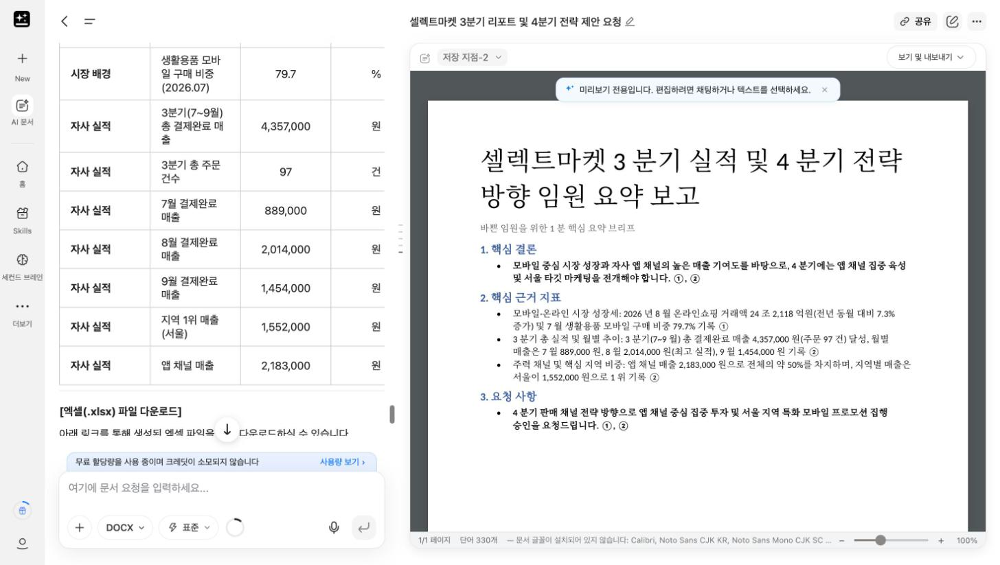
Genspark 실전 활용 ②: 템플릿과 문서 스타일
보고서와 기획서의 기본 구조를 익히고, AI 문서로 템플릿을 만든 뒤, 같은 내용을 목적별 스타일로 바꿔 봐요. 마지막으로 섹션 간 일관성을 점검해요.
3-1. 보고서·기획서 기본 구조
보고서는 있었던 일을 근거로 전달하고, 기획서는 앞으로 할 일을 설득해요. 목적이 다르니 뼈대도 달라요.
| 문서 | 구성 | 각 부분에 쓰는 것 |
|---|---|---|
| 보고서 | 서론 | 왜 이 보고서를 쓰는지(목적), 무엇을 다루는지(범위·기간) |
| 본론 | 자료와 분석 결과, 표·차트 같은 근거 | |
| 결론 | 핵심 결과 한 줄, 다음에 할 일 제안 | |
| 기획서 | 목표 | 무엇을 언제까지 얼마나 이루려는지 |
| 전략 | 현황과 문제, 그래서 어떤 방향으로 갈지 | |
| 제안 | 실행 방안, 필요한 자원, 기대 효과와 일정 |
① 서론에서 밝힌 목적에 결론이 직접 답하나요? ② 결론의 숫자가 본론의 표·차트 숫자와 같나요? ③ 같은 대상을 같은 이름으로 부르나요? (예: "앱 채널"과 "모바일"을 섞어 쓰지 않기) ④ 각 섹션 첫 문장이 앞 섹션과 이어지나요?
3-2. 템플릿 자동 생성
AI 문서에는 미리 만들어진 템플릿이 있어요. 오른쪽 [모든 템플릿]에서 보고서 & 분석, 비즈니스 분류를 살펴보세요(2-3 화면 오른쪽). 기본 템플릿은 영문 디자인이 많아서, 우리 회사에 맞는 틀이 없으면 직접 만들어 달라고 해요.
요청: 분기 실적 보고서 템플릿을 만들어 줘. 내용: 서론(목적·범위) / 본론(시장 배경·우리 실적·분석) / 결론(핵심 결과·제안) 구조로, 칸마다 무엇을 쓰는지 안내 문구를 회색 글씨로 넣어 줘. 표 1개, 차트 1개 자리를 본론에 비워 둬. 형식: Word 문서 1개, A4 2쪽 이내
같은 방법으로 기획서 템플릿도 만들어 봐요.
요청: 사업 기획서 템플릿을 만들어 줘. 내용: 목표 / 현황과 문제 / 전략 / 실행 방안 / 기대 효과·일정 구조로, 칸마다 무엇을 쓰는지 안내 문구를 넣어 줘. 형식: Word 문서 1개, A4 2쪽 이내
3-3. 목적별 문서 스타일 변환
2-3에서 만든 리포트를 같은 내용, 다른 목적의 문서로 바꿔요. 2-3 리포트가 열린 AI 문서 화면에서 이어서 요청해요.
① 보고서 → 기획서(제안서)
요청: 이 리포트를 4분기 판매 채널 전략 기획서로 바꿔 줘. 내용: 3-2에서 만든 기획서 구조(목표 / 현황과 문제 / 전략 / 실행 방안 / 기대 효과·일정)를 따라 줘. 리포트에 있는 숫자는 그대로 쓰고, 새 숫자는 만들지 마. 목표 수치는 '[목표 입력]'으로 비워 둬. 형식: Word 문서, A4 2쪽 이내
② 보고서 → 1페이지 요약 보고
요청: 이 리포트를 바쁜 임원이 1분 안에 읽을 수 있는 요약 보고로 바꿔 줘. 내용: 결론을 맨 위에 한 줄로, 근거 숫자 3개, 요청 사항 1개 형식: A4 반 쪽 이내, 글머리표
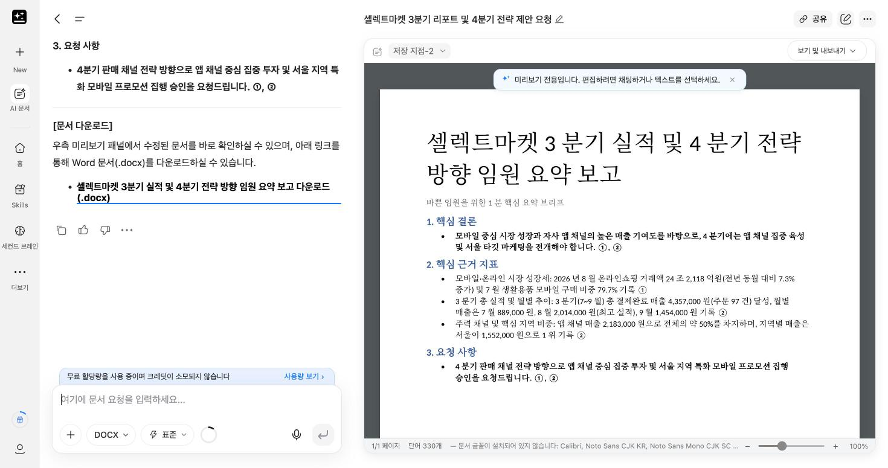
(선택) 발표 자료로 바꾸기눌러서 펼쳐 보세요
홈의 AI 슬라이드를 열고, 요약 보고 내용을 붙여 넣어 요청해요. 슬라이드 작업은 크레딧이 차감될 수 있어요.
요청: 아래 요약 보고로 발표 슬라이드를 만들어 줘. 내용: [② 요약 보고 붙여넣기] 형식: 5장 이내, 장마다 핵심 문장 1개와 근거 숫자, 글자는 크게
변환 후 확인: 세 문서의 숫자가 서로 같은지, 기획서에서 새로 생긴 숫자가 없는지 확인해요.
3-4. 섹션 간 일관성 점검
3-1의 네 가지 기준으로 AI에게 점검을 맡기고, 고칠지는 내가 정해요.
요청: 이 문서의 섹션 간 논리 연결과 일관성을 점검해 줘. 내용: ① 서론의 목적에 결론이 답하는지 ② 결론의 숫자가 본론과 같은지 ③ 같은 대상을 다른 이름으로 부른 곳이 있는지 ④ 섹션 첫 문장이 앞 섹션과 이어지는지. 문서는 고치지 말고 점검 결과만 알려 줘. 형식: 기준 / 문제 위치 / 문제 내용 / 고칠 문장 제안 표
"문서는 고치지 말고"라고 쓰는 이유는, AI가 고치면서 숫자나 표현을 함께 바꿔 버리는 일이 있기 때문이에요. 제안을 보고 필요한 곳만 고쳐 달라고 다시 요청해요.
데이터 기반 보고서 제작
셀렉트마켓 3분기 데이터를 AI 시트로 요약하고 차트로 시각화한 뒤, 결론부터 말하는 인사이트 중심 보고서에 표와 차트를 넣어 완성해요.
4-1. AI 시트에 실습 파일 올리기
orders_raw.csv와 products.csv를 함께 올려요.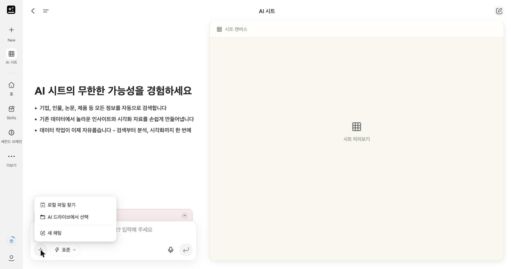
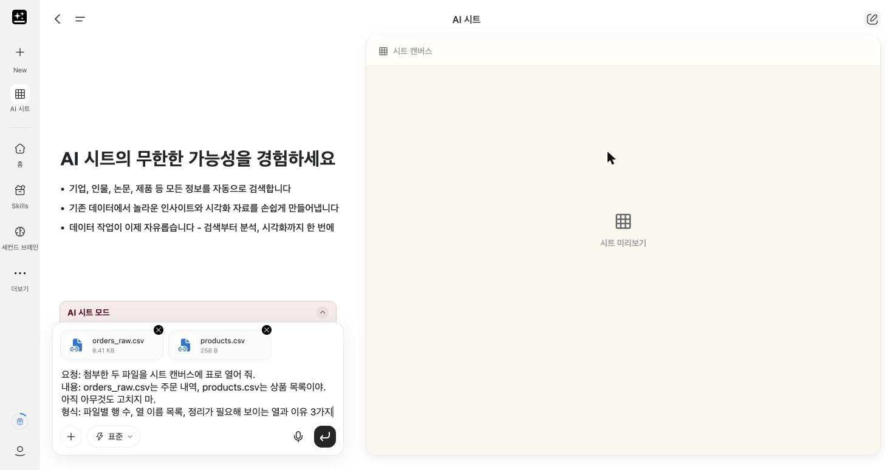
4-2. 데이터 요약: 자주 쓰는 분석 4가지
같은 AI 시트 화면에서 이어서 요청해요. 요청마다 결과를 아래 기준값과 대조해 보세요. 답은 오른쪽 시트 캔버스가 아니라 왼쪽 대화창에 표로 나와요.
준비. 분석할 데이터 정하기
정리 전 파일이라 그대로는 집계할 수 없어요. 어떤 행을 쓸지 먼저 알려 줘요.
요청: 분석에 쓸 데이터를 준비해 줘. 내용: 첨부한 orders_raw.csv는 정리 전 주문 내역(125행)이고, products.csv는 상품 목록이야. 상품명은 상품코드로 products.csv에서 찾아 줘. 중복 행은 1건만 남기고, 지역·결제상태 표기를 통일하고, 수량·단가는 숫자로 바꿔 줘. 금액은 수량 × 단가야. 결제완료 주문만 쓰고, 수량이 빈칸이거나 300, 250, -2인 행은 빼 줘. 형식: 사용할 행 수 한 줄
젠스파크가 알려 준 행 수가 97행이면 준비가 된 거예요. 이 97행의 매출 합계는 4,357,000원이에요.
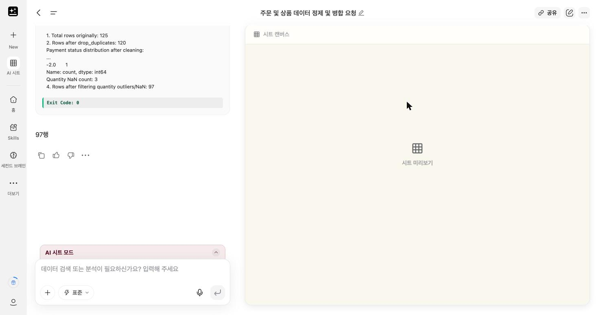
분석 1. 비교: 어느 지역이 많이 팔았나
요청: 지역별 매출, 주문 건수, 건당 평균 금액을 구해 줘. 내용: 위에서 준비한 데이터 형식: 매출 큰 순서의 표
| 지역 | 매출(원) | 주문 건수 | 건당 평균(원) |
|---|---|---|---|
| 서울 | 1,552,000 | 37 | 41,946 |
| 대구 | 879,000 | 13 | 67,615 |
| 경기 | 826,000 | 23 | 35,913 |
| 부산 | 772,000 | 16 | 48,250 |
| 광주 | 328,000 | 8 | 41,000 |
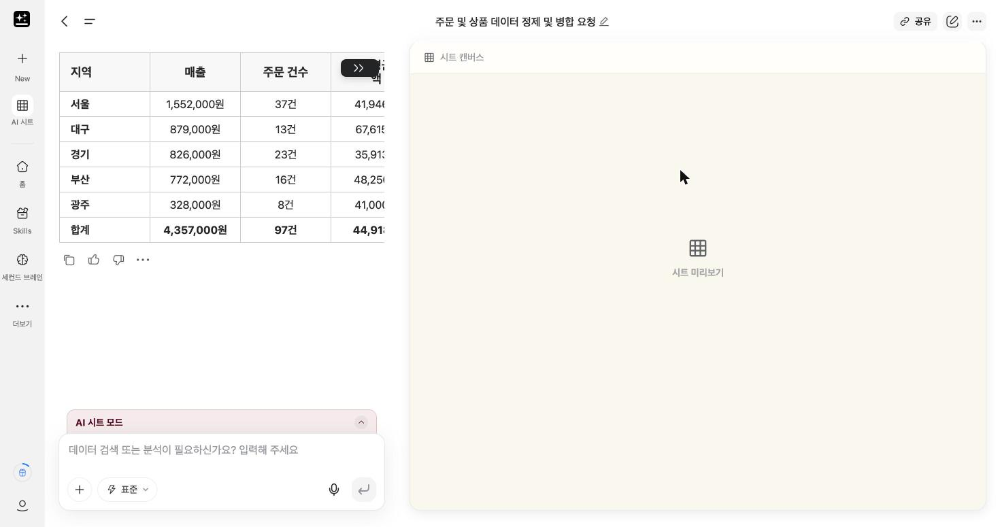
분석 2. 추세: 월별로 늘고 있나 줄고 있나
요청: 월별 매출과 전월 대비 증감률을 구해 줘. 내용: 위에서 준비한 데이터 형식: 표
| 월 | 매출(원) | 전월 대비 |
|---|---|---|
| 7월 | 889,000 | - |
| 8월 | 2,014,000 | +126.6% |
| 9월 | 1,454,000 | -27.8% |
분석 3. 구성비: 무엇이 매출의 대부분을 차지하나
요청: 상품별 매출, 전체 대비 비중, 누적 비중을 구해 줘. 내용: 위에서 준비한 데이터 형식: 매출 큰 순서의 표
| 상품 | 매출(원) | 비중 | 누적 비중 |
|---|---|---|---|
| 텀블러 500ml | 1,065,000 | 24.4% | 24.4% |
| 블루투스 스피커 | 1,035,000 | 23.8% | 48.2% |
| 무선 충전기 | 841,000 | 19.3% | 67.5% |
| 에코백 | 675,000 | 15.5% | 83.0% |
| 머그컵 | 552,000 | 12.7% | 95.7% |
| 노트 세트 | 189,000 | 4.3% | 100.0% |
분석 4. 교차: 지역마다 잘 팔리는 채널이 다른가
요청: 지역별·채널별 매출을 구해 줘. 내용: 위에서 준비한 데이터 형식: 행은 지역, 열은 채널인 교차표
| 지역 | 앱 | 웹 | 오프라인 |
|---|---|---|---|
| 서울 | 854,000 | 580,000 | 118,000 |
| 대구 | 627,000 | 102,000 | 150,000 |
| 경기 | 341,000 | 402,000 | 83,000 |
| 부산 | 178,000 | 594,000 | 0 |
| 광주 | 183,000 | 145,000 | 0 |
숫자가 다르다면 준비 단계에서 어떤 행을 뺐는지가 다른 거예요. "사용한 행 수와 뺀 행 수를 알려 줘"라고 물어보세요.
4-3. 요약 → 시각화 자동 변환
4-2의 결과로 보고서에 넣을 차트를 만들어요. 차트 종류는 무엇을 보여 주고 싶은지로 고르면 돼요. 차트는 홈 입력창에서 요청해요. 실제 실행에서 AI 시트에 차트를 요청하면 "시트 작업 중"에서 6분 넘게 멈췄고, 홈 입력창은 1분 안에 차트 이미지를 만들었어요.
| 보여 주고 싶은 것 | 어울리는 차트 | 오늘 예시 |
|---|---|---|
| 시간에 따른 변화 | 세로 막대 또는 선 | 월별 매출 |
| 항목끼리 크기 비교 | 가로 막대 | 지역별 매출 |
| 전체 중 비중 | 누적 막대 또는 원 | 상품별 매출 비중 |
요청: 보고서에 넣을 차트를 만들어 줘. 내용: 7월 889,000원 / 8월 2,014,000원 / 9월 1,454,000원 형식: 막대 차트, 제목은 "3분기 월별 매출", 막대 위 금액 표시, 이미지 파일로 저장
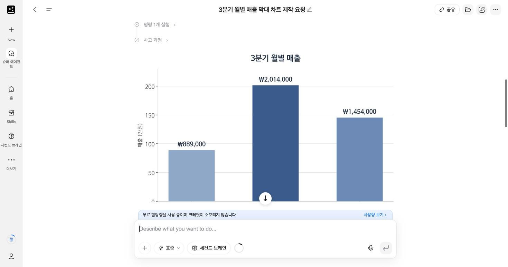
결과 확인: 막대 높이 순서와 막대 위 숫자가 4-2 기준값과 같은지 봐요. 실제 결과에서는 세로축은 "만원", 막대 위 숫자는 "원"으로 단위가 섞여 있었어요. 보고서에 넣기 전에 "단위를 원으로 통일해 줘"라고 고쳐 달라고 해요. 지역별 가로 막대, 상품별 비중도 같은 방법으로 하나씩 요청해요.
4-4. 인사이트 중심 보고서 구성과 차트·표 삽입
숫자를 나열하는 보고서와 인사이트 중심 보고서의 차이는 순서예요. 결론을 먼저 말하고, 근거로 표와 차트를 붙이고, 마지막에 제안해요.
요청: 4-2, 4-3의 결과로 인사이트 중심의 3분기 매출 보고서를 만들어 줘. 내용: 3-2에서 만든 분기 실적 보고서 구조를 따라 줘. 결론 한 줄을 맨 앞에 두고, 근거로 4-2의 표 2개와 4-3의 차트 2개를 본문에 넣어 줘. 표와 차트 아래에는 "무엇을 보여 주는지" 한 문장을 달아 줘. 숫자는 4-2 결과만 쓰고 새로 만들지 마. 형식: Word 문서, A4 2쪽 이내
결과 확인
- 결론 한 줄이 맨 앞에 있나요?
- 표와 차트가 본문에 들어갔고, 아래에 설명 문장이 있나요?
- 보고서의 숫자가 4-2 기준값과 같나요?
- 제안이 근거에서 자연스럽게 이어지나요?
미니 프로젝트: 실무 보고서/기획서 제작
오전과 오후에 익힌 순서 그대로, 내 업무 주제로 자료 조사 → 분석 → 보고서/기획서 제작 전 과정을 직접 해 봐요.
5-1. 주제와 독자 정하기
내 업무에서 실제로 써야 하는 문서를 하나 골라요. 정하기 어렵다면 아래 예시에서 골라도 좋아요.
| 문서 종류 | 주제 예시 | 독자 |
|---|---|---|
| 보고서 | 우리 부서 3분기 업무 실적 보고 | 팀장, 부서장 |
| 보고서 | 최근 고객 문의 유형 분석과 개선 방향 | 관련 부서 |
| 기획서 | 우리 팀 업무에 생성형 AI 도입 제안 | 부서장, 경영진 |
| 기획서 | 신규 교육 프로그램 운영 기획 | 인사·교육 담당 |
주제를 정했다면 메모장에 세 줄을 적어요: ① 누가 읽나 ② 읽고 나서 무엇을 결정해야 하나 ③ 꼭 들어가야 할 숫자나 자료
5-2. 진행 순서 (90분)
| 시간 | 할 일 | 쓰는 기능 | 참고 |
|---|---|---|---|
| 14:30–14:40 | 주제·독자·목적 세 줄 정하기 | 메모장 | 5-1 |
| 14:40–15:00 | 자료 조사와 숫자 확인 | 딥 리서치, 팩트 체크 | 2-1, 2-2 |
| 15:00–15:15 | (데이터가 있으면) 요약과 차트 | AI 시트 | 4-2, 4-3 |
| 15:15–15:45 | 템플릿 → 초안 → 스타일 맞추기 | AI 문서 | 3-2, 3-3, 4-4 |
| 15:45–16:00 | 일관성 점검, 발표 준비 | AI 문서, AI 슬라이드(선택) | 3-4 |
첫 프롬프트는 아래처럼 시작해 보세요. [ ] 안을 5-1에서 적은 세 줄로 바꿔요.
요청: [보고서 / 기획서] 초안을 만들어 줘. 내용: 주제는 [주제]이고, 독자는 [독자]야. 읽고 나서 [결정해야 할 것]을 정할 수 있어야 해. 꼭 들어갈 자료는 [자료·숫자]야. 자료에 없는 숫자는 만들지 말고 '[확인 필요]'로 표시해 줘. 형식: [보고서면 서론·본론·결론 / 기획서면 목표·전략·제안] 구조, A4 2쪽 이내
5-3. 제출 전 체크리스트
- 결론(보고서) 또는 제안(기획서)이 맨 앞이나 맨 끝에 분명하게 있나요?
- 모든 숫자에 출처가 있나요? '[확인 필요]'가 남아 있지 않나요?
- 팩트 체크를 한 번 이상 했나요?
- 3-1의 섹션 간 논리 연결 네 가지 기준을 통과했나요?
- AI가 쓴 문장 중 내가 직접 고친 곳을 말할 수 있나요?
발표 및 피드백
완성한 보고서/기획서를 3분 동안 발표하고, 사실 · 논리 · 실행 가능성 세 가지 기준으로 피드백을 나눠요.
6-1. 3분 발표 구성
| 순서 | 말할 것 | 시간 |
|---|---|---|
| 1 | 주제와 독자: 누구에게 무엇을 결정하게 하려는 문서인가 | 30초 |
| 2 | 핵심 결론 또는 제안 한 줄 | 30초 |
| 3 | 근거: 자료와 숫자, 출처 | 1분 |
| 4 | AI를 어디에 썼고, 무엇을 직접 고쳤나 | 1분 |
6-2. 피드백 기준
다른 사람의 발표를 들으며 세 가지 기준으로 한 가지씩 피드백을 남겨요.
| 기준 | 확인할 질문 |
|---|---|
| 사실 | 숫자와 출처가 맞나요? 확인하지 않은 내용이 섞여 있지 않나요? |
| 논리 | 결론이 근거에서 자연스럽게 나오나요? 섹션끼리 이어지나요? |
| 실행 가능성 | 제안대로 실제로 움직일 수 있나요? 누가, 언제, 무엇을 하나요? |
오늘 쓴 프롬프트 남기기: 잘 된 프롬프트는 메모장에 모아 두세요. 다음 달 보고서를 쓸 때 [ ] 안만 바꿔 다시 쓸 수 있어요.